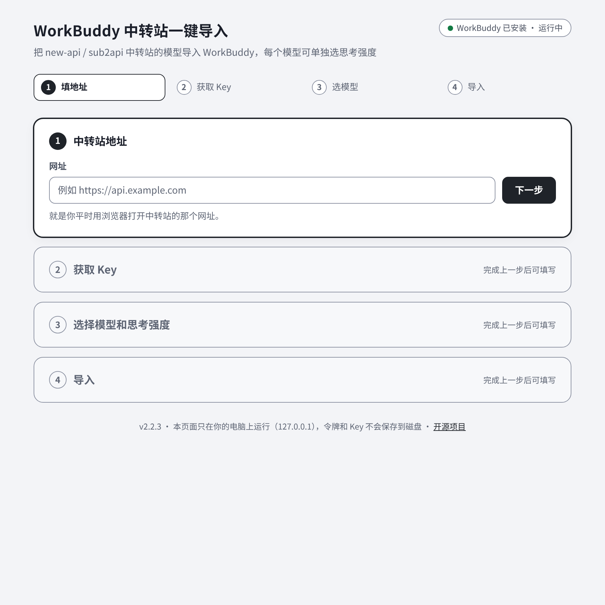
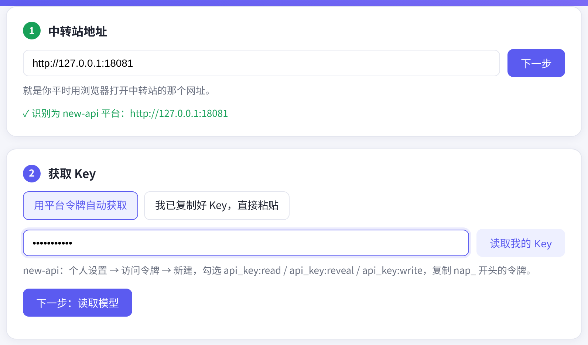
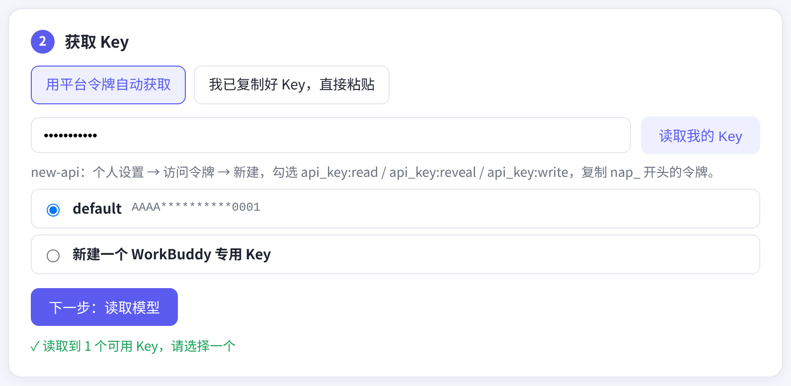
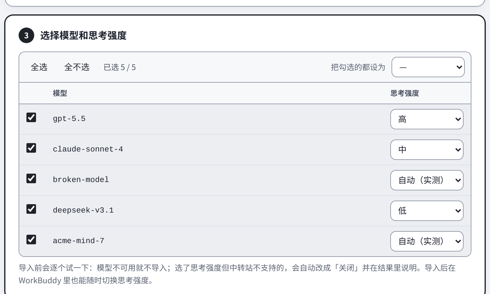
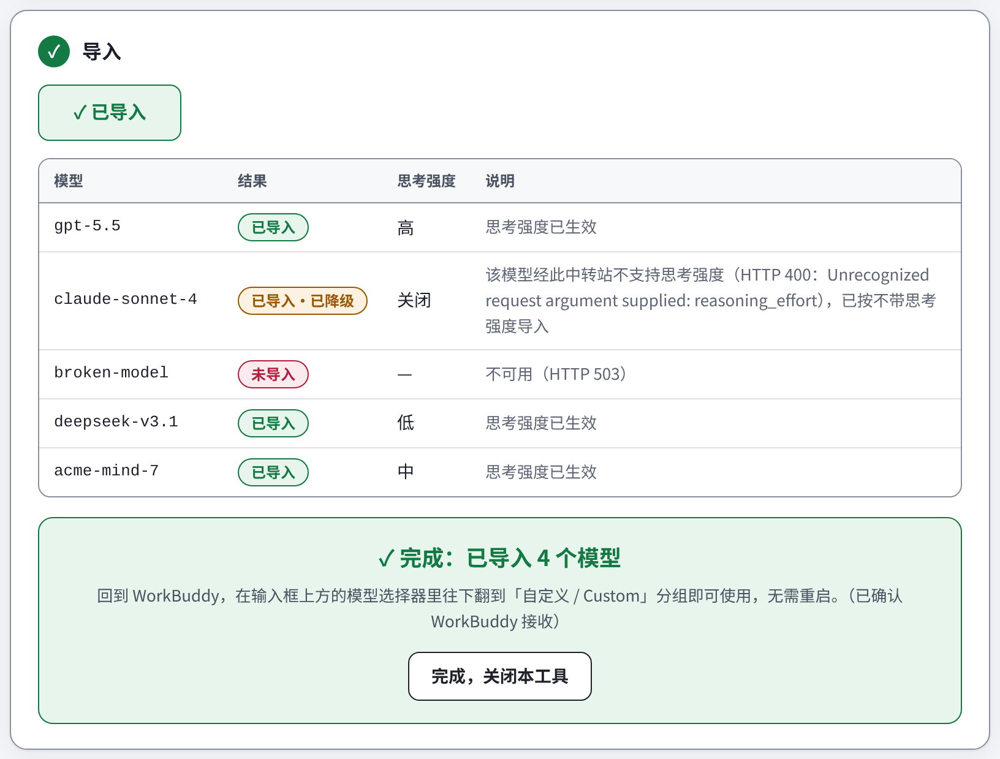

版本 v2.2.3 · 2026-10-24
这个小工具能把你在中转站（new-api 或 sub2api 搭建的网站）上的 API Key，一键导入到 WorkBuddy 里。导入以后，你就能在 WorkBuddy 里直接选用中转站提供的模型，不用再手动填地址、复制 Key。
使用前，电脑上要先装好 WorkBuddy（https://www.workbuddy.cn/）。
打开下载页 https://github.com/xtianowner/workbuddy-relay/releases/latest，在页面底部的「Assets」里，按你的电脑选一个下载：
| 你的电脑 | 下载这个文件 |
|---|---|
| Windows | workbuddy-relay-2.2.3-win.zip |
| Mac（M1/M2/M3/M4 等 Apple 芯片） | workbuddy-relay-2.2.3-mac-arm64.zip |
| Mac（Intel 芯片） | workbuddy-relay-2.2.3-mac-x64.zip |
下载后双击 zip 解压，会得到一个文件夹，里面有程序和一份 README.txt。
双击 WorkBuddy-Relay-Import.exe。程序会自动用你的默认浏览器打开一个导入页面，接下来所有填写都在这个网页里完成。同时会出现一个黑色小窗口，它是网页背后的程序，导入完成前不要关掉它。
第一次运行时，Windows 可能弹出蓝色提示「Windows 已保护你的电脑」。点「更多信息」，再点「仍要运行」就行。出现这个提示是因为程序没有做商业签名，并不代表有病毒。
双击 WorkBuddy-Relay-Import。系统会先打开一个「终端」窗口（网页背后的程序，导入完成前不要关掉），然后自动用默认浏览器打开导入页面。
第一次打开时，Mac 可能提示「无法打开，因为无法验证开发者」。处理方法：
在较早的 macOS 版本上，也可以在程序上点右键 →「打开」→「打开」。
页面右上角会显示是否检测到 WorkBuddy。页面分 4 步，从上往下填写就行，完成一步下一步才会亮起来。

图 2-1 刚打开的导入页面。
http://127.0.0.1: 开头的地址，把它整段复制到浏览器地址栏打开即可。这个页面只在你自己的电脑上运行，别人访问不到。在第 1 步「中转站地址」里，填你平时用浏览器打开中转站的那个网址，比如 https://api.example.com，点「下一步」。
程序会自动识别这个站点是 new-api 还是 sub2api，识别成功会显示绿色的 ✓。

图 3-1 识别为 new-api 后，第 2 步亮起（令牌输入框里的内容会显示成圆点）。截图来自本地测试站点，所以地址是 127.0.0.1，你看到的会是自己中转站的网址。
第 2 步有两种方式，点上方的按钮切换：
api_key:read、api_key:reveal、api_key:write 这三项权限都勾上；nap_ 开头的令牌，粘贴到导入页面的令牌框里，点「读取我的 Key」。读取成功后会列出你账号里能用的 Key（只显示开头和结尾几位）。点选一个，或者选最下面的「新建一个 WorkBuddy 专用 Key」，然后点「下一步：读取模型」。

图 4-1 读取到已有 Key，默认选中第一个。
在中转站网站的「API 密钥 / 令牌」页面点复制，回到导入页面点「我已复制好 Key，直接粘贴」，粘贴后点「下一步：读取模型」。
第 3 步会列出这个 Key 能用的聊天模型（向量、图片等非聊天模型已自动去掉）。

图 5-1 勾选模型，并给每个模型选思考强度。
点第 4 步的「导入到 WorkBuddy」。程序会逐个测试模型，几秒到几十秒后显示结果表：

图 6-1 导入完成。截图中 claude-sonnet-4 被测试站点拒绝了思考参数，已自动降级；broken-model 不可用，没有导入。
看到绿色的「完成：已导入 N 个模型」就成功了。点「完成，关闭本工具」，程序会退出，浏览器页面可以直接关掉。忘了点也没关系，程序会在导入完成 2 分钟后自动退出。
先安装 WorkBuddy 并至少打开一次，然后重新运行本工具。
见第 2 章，按步骤放行即可。
复制黑色窗口（Mac 是终端窗口）里显示的完整地址到浏览器打开。如果程序已经关掉了，重新双击运行即可，每次运行地址都会变。
说明中转站这个模型现在调不通，比如没有可用的渠道，或者余额不足。程序只会导入能用的模型，等站点那边恢复后再运行一次就行。
请检查三件事：Key 是否复制完整、Key 在网站上是否处于启用状态、账户余额是否充足。
说明这个中转站对该模型不接受思考参数（常见于站点没有为 Claude、Gemini 做转换）。模型本身照常能用，只是不带思考。可以联系站长开启，开启后重新运行本工具即可。
不会。同一个站点重复导入只会更新原来的条目，还会自动清理以前导入后不能用的旧条目。
导入页面只在你自己电脑上运行（地址是 127.0.0.1），并带一次性口令，其他网站调用不了。平台令牌只在运行时用一下，不会保存。Key 会写进 WorkBuddy 自己的配置文件，WorkBuddy 要靠它来调用模型。这个文件只有你自己的账户能读。
重新运行本工具，填新的站点地址或者选新的 Key 就行。
遇到问题或者有建议，可以到这里提交：https://github.com/xtianowner/workbuddy-relay/issues，点「New issue」。
请写清楚这几件事：用的是 Windows 还是 Mac、做到了第几步、你希望看到什么、实际看到了什么。最好附一张导入页面的截图，记得先把 Key 和令牌打码。
本工具是开源软件（MIT 许可），源码地址：https://github.com/xtianowner/workbuddy-relay